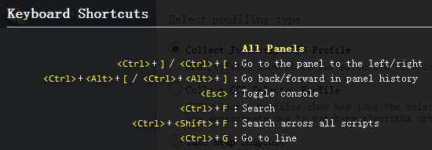
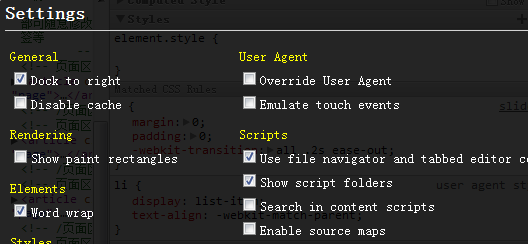
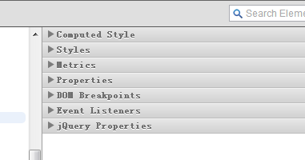

Chrome Developer Tools
功能与技巧详解
崇志：chongzhi.ldq@taobao.com
崇志：chongzhi.ldq@taobao.com
http://www.chromium.org/getting-involved/dev-channel
一个google帐号可同步所有信息(收藏夹，插件等)
Web App
官方参考文档：http://code.google.com/intl/zh-CN/chrome/devtools/docs/overview.html#access
英文原版：http://code.google.com/intl/en/chrome/devtools/
在打开chrome developer tools情况下，按 "?" 键调出

比较好用常用的几个快捷键

参考： http://dev.w3.org/html5/workers/ http://blog.csdn.net/chen123456789198808/article/details/5537121
v8跑分：http://v8.googlecode.com/svn/data/benchmarks/v7/run.html
Remote debugging
http://code.google.com/intl/zh-CN/chrome/devtools/docs/remote-debugging.html
DevTools本身也是可以被扩展的(仅canary或dev版本)
http://code.google.com/chrome/extensions/trunk/experimental.html
"permissions": [ "experimental", ... ],
chrome-query
